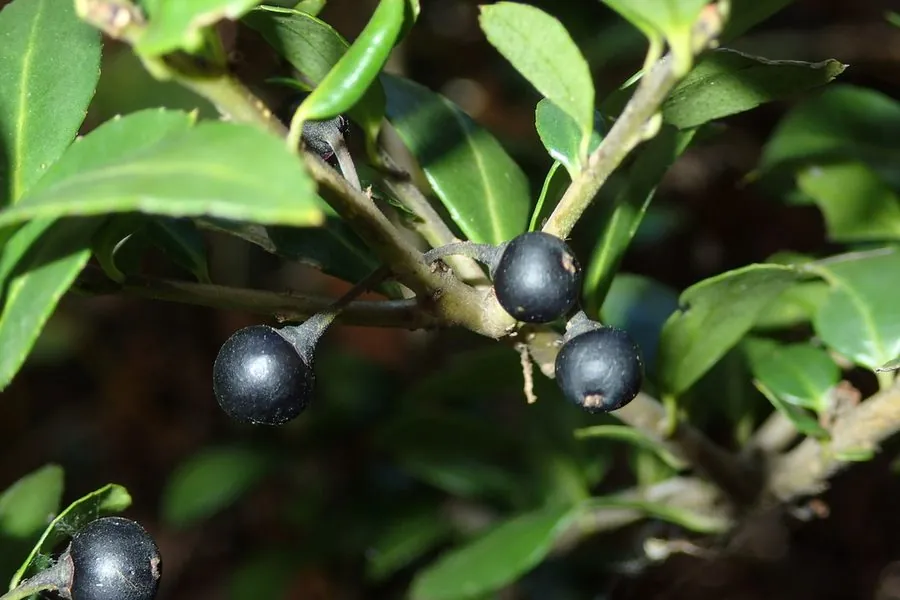

灌木与花木 · 植物界
龟甲冬青 Ilex crenata

冬青科常绿灌木，叶片小而密、表面隆起如龟甲，四季常青，耐修剪，是南方庭院与盆景常见的观叶植物。
- 分类
- 门被子植物门纲木兰纲目冬青目科冬青科属冬青属
- 栖息环境
- 山地林下与庭院，喜温暖湿润和半阴
- 地理分布
- 原产日本；中国长江以南广泛栽培
- 保护级别
- 暂无评估；中国未列入国家重点保护野生植物名录
物种志
龟甲冬青为冬青科冬青属常绿灌木，高 1–2 米，分枝密集，小枝具短柔毛。叶互生，椭圆形至倒卵形，小而密，革质，表面深绿色、隆起如龟甲，边缘具细锯齿。花小，白色，簇生于叶腋，花期 5–6 月；果实为核果，球形，成熟时黑色，果期 9–10 月。
龟甲冬青原产日本，中国长江以南广泛栽培，喜温暖湿润、半阴的环境，耐寒性一般，适宜疏松肥沃、排水良好的酸性土壤。它叶片小而密、表面隆起如龟甲，四季常青，耐修剪，是南方庭院、绿篱与盆景常见的观叶植物；也常作造型树。栽培以扦插繁殖为主，需注意防治介壳虫，夏季适当遮阴，北方盆栽冬季需移入室内。
形态与习性
- 株高1–2 米，分枝密集
- 叶形叶小而密，表面隆起如龟甲
- 花期5–6 月，花小、白色
- 果期9–10 月，核果黑色
- 光照喜半阴，也耐散射光
- 水分喜湿润，忌积水
- 主要用途庭院观叶、绿篱与盆景
趣味知识
- 龟甲冬青的叶片表面隆起，纹路像龟甲，因此得名。
- 它四季常青、耐修剪，是制作盆景和造型的优良材料。
- 龟甲冬青原产日本，中国长江以南广泛栽培。
- 它喜酸性土，栽培时需避免长期使用碱性水浇灌。